Algunos de sus trabajos
Dentro de la variedad de sus trabajos, estos son personalmente los que más me agradan:
Trabajo en indumentaria para una marca Rosarina
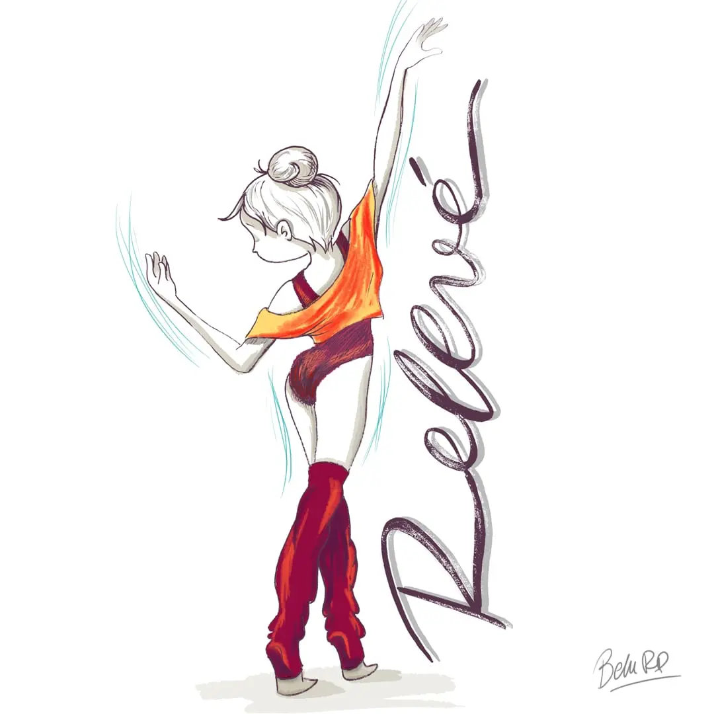
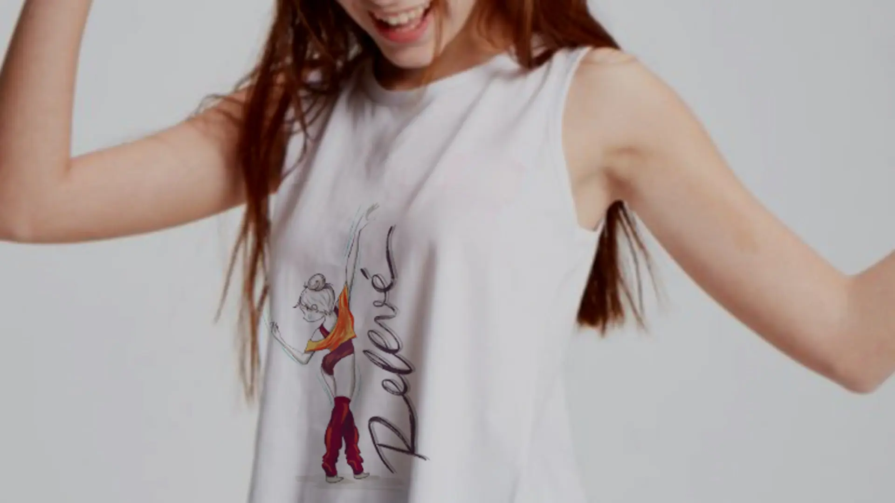
Trabajo de ilustración para una marca de juegos de mesa nacional
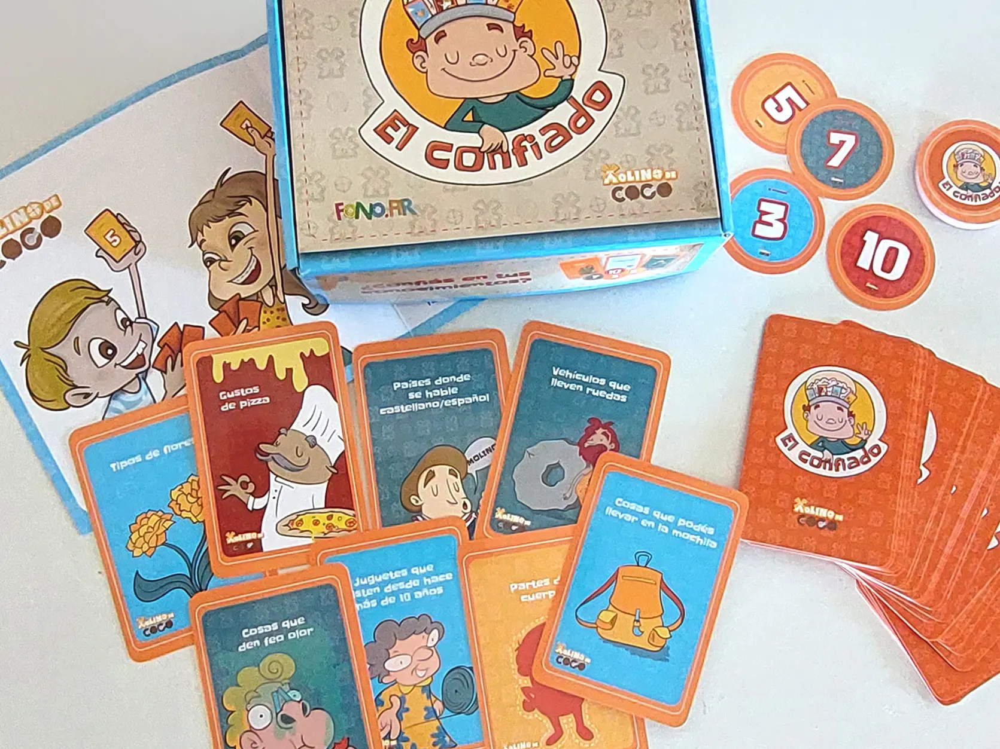
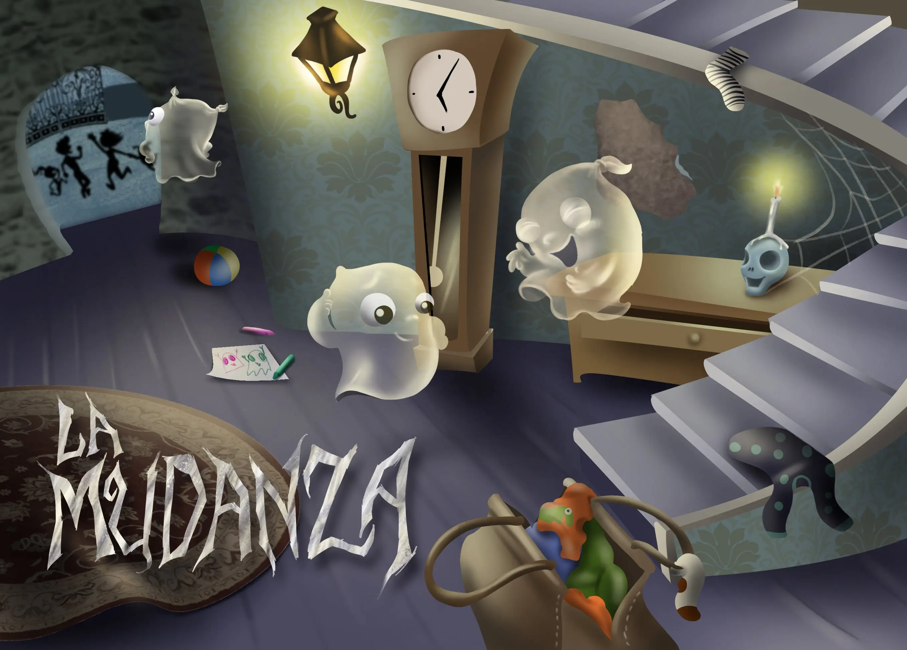
Ilustración completa del libro de cuentos infantil "Perro que ladra"
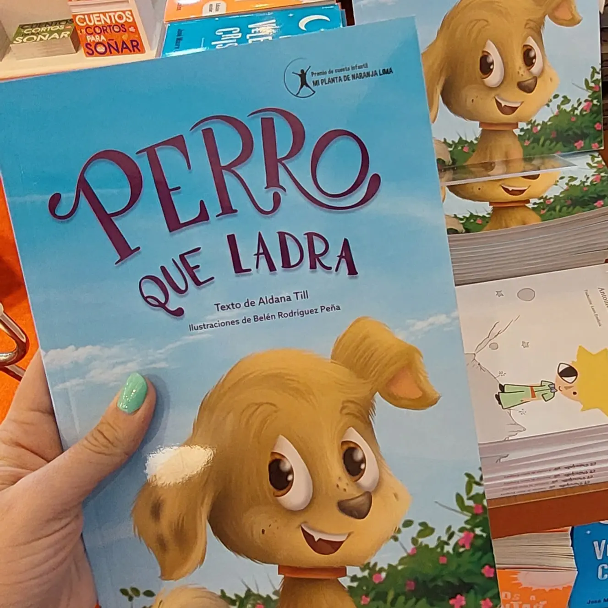
Ilustración completa del libro de cuentos infantil "¿Quién soy?"
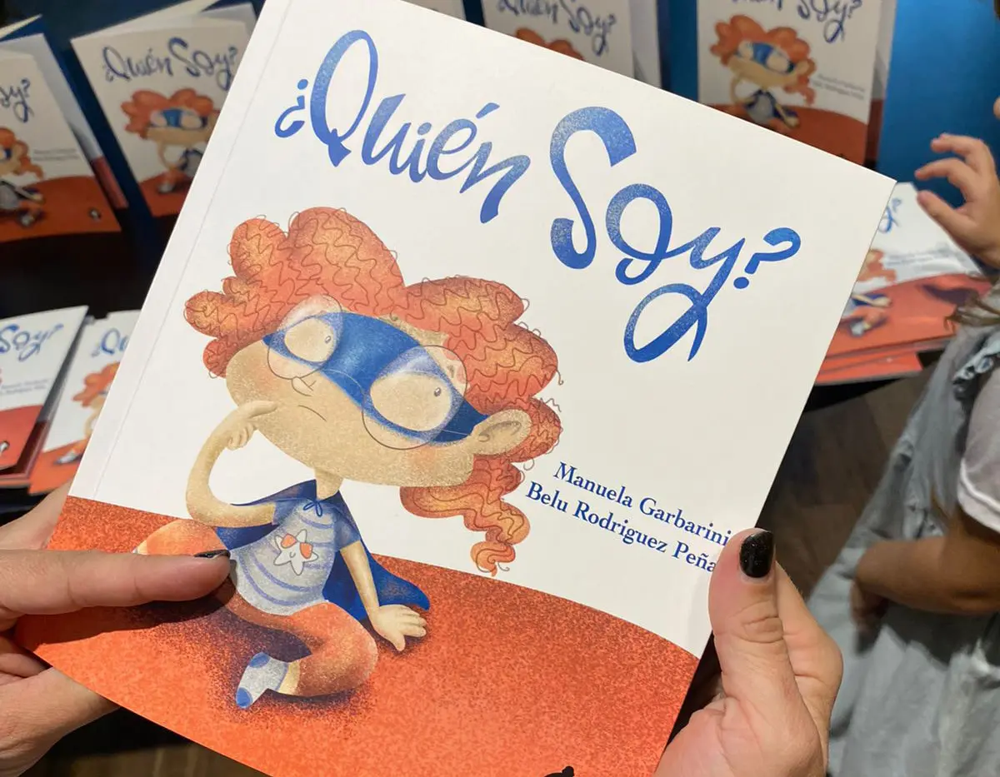
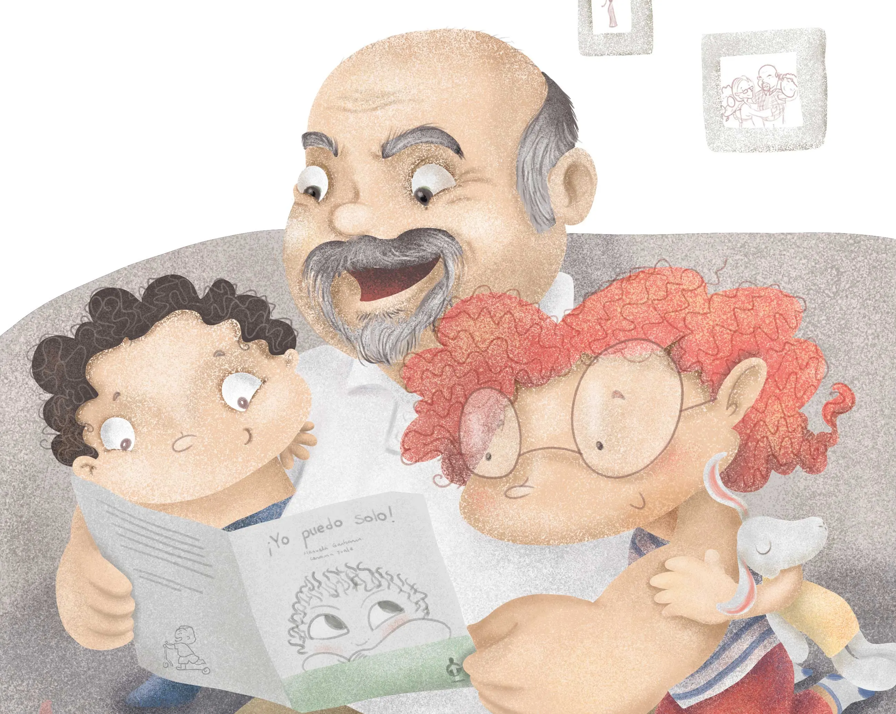
Diseño e ilustración de mural marítimo
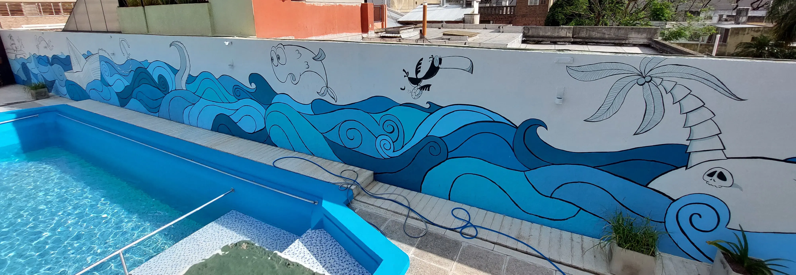
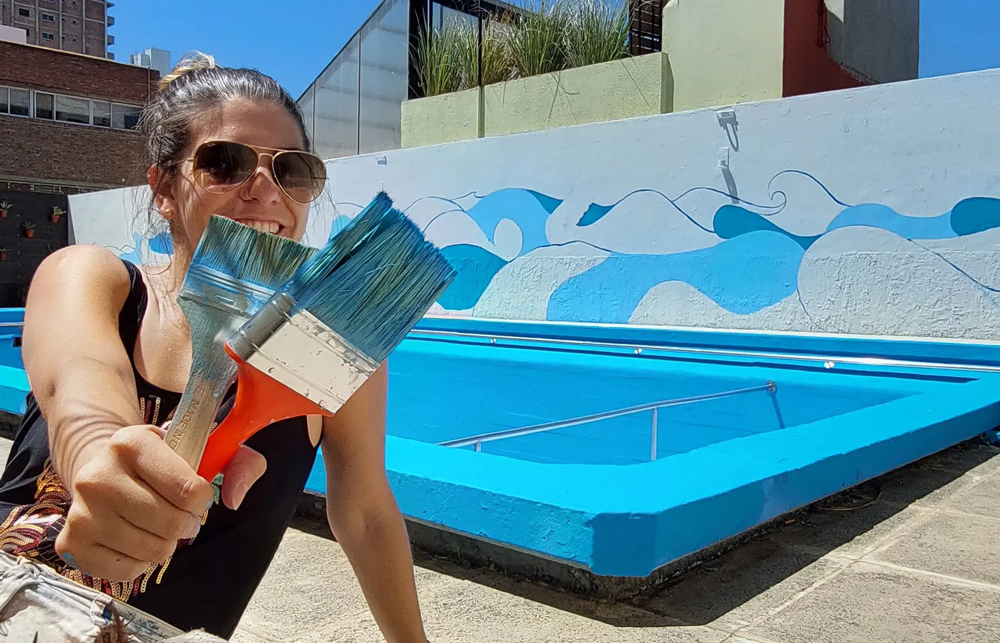
Colaboración con la marca @proyectopasillodeco en instagram
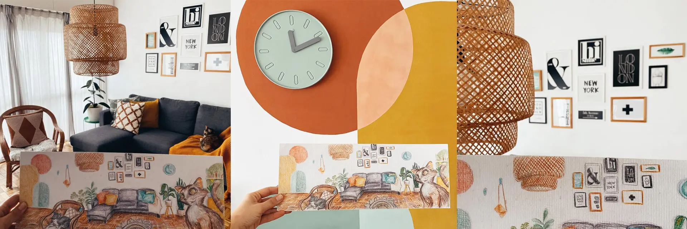
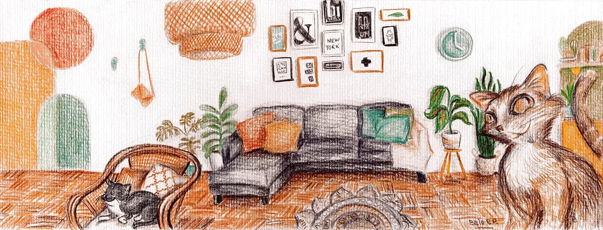